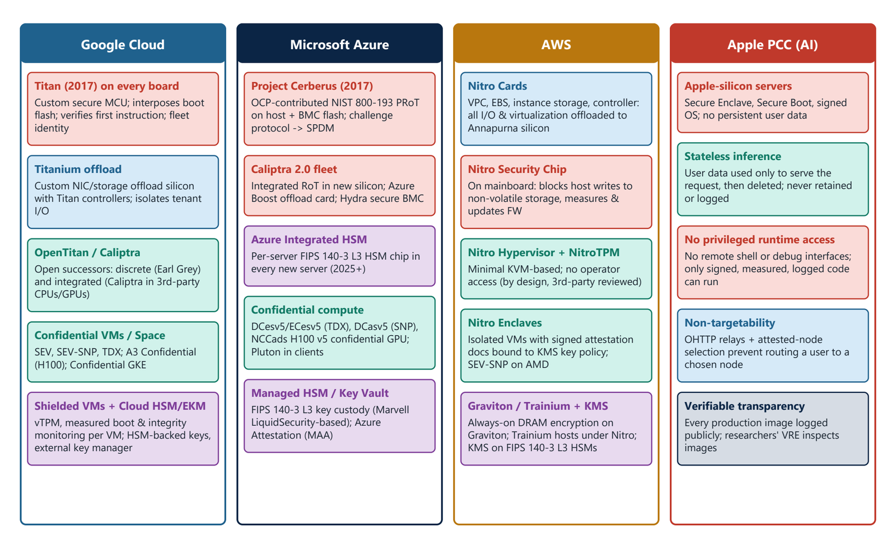
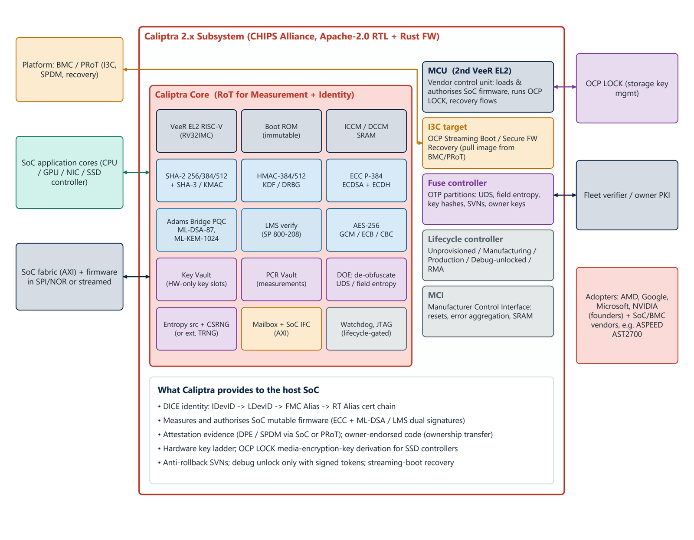
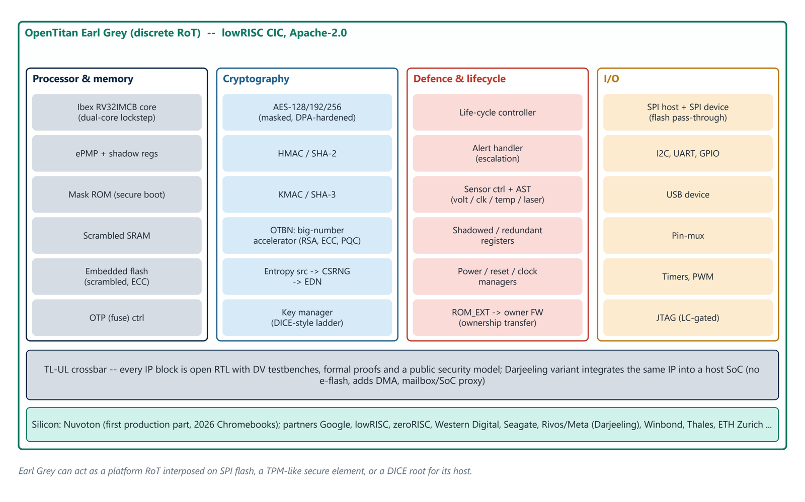

Chapter 8: Roots of Trust in Practice: Hyperscalers, Open Projects and Products¶
The four largest cloud operators built custom roots of trust between 2017 and 2025, and their designs explain most of today's open standards: Cerberus became the OCP attestation profile, Titan became OpenTitan, and all of them co-founded Caliptra. This chapter surveys those designs, the two open projects Caliptra and OpenTitan in detail, and the commercial products: discrete platform RoTs, integrated RoTs, TPMs and server OEM and ODM implementations.
8.1 Hyperscaler roots of trust¶
Figure 8.1 compares the architectures of Google Cloud, Microsoft Azure, AWS and Apple Private Cloud Compute. Google Cloud puts Titan (2017) on every board as a custom secure MCU that interposes on boot flash, verifies the first instruction and provides fleet identity; Titanium offload silicon with Titan controllers isolates tenant I/O; OpenTitan and Caliptra are the open successors; and Confidential VMs and Confidential Space, Shielded VMs and Cloud HSM provide TEEs, vTPM, measured boot and HSM-backed keys. Microsoft Azure has Project Cerberus (2017), an OCP-contributed NIST 800-193 PRoT on host and BMC flash whose challenge protocol fed into SPDM; the Caliptra 2.0 fleet as an integrated RoT in new silicon, with the Azure Boost offload card and Hydra secure BMC; the Azure Integrated HSM, a per-server FIPS 140-3 Level 3 HSM chip in every new server (2025 onward); and confidential compute offerings and Managed HSM. AWS has the Nitro cards (all I/O and virtualisation offloaded to Annapurna silicon), the Nitro Security Chip on the mainboard (blocking host writes to non-volatile storage, measuring and updating firmware), the minimal Nitro Hypervisor with NitroTPM and no operator access by design, Nitro Enclaves with signed attestation documents bound to KMS key policy, and always-on DRAM encryption on Graviton. Apple Private Cloud Compute uses Apple-silicon servers with Secure Enclave and signed OS, stateless inference, no privileged runtime access, non-targetability through OHTTP relays and attested-node selection, and verifiable transparency through public logging of every production image.

Other operators follow the same pattern. Oracle Cloud pioneered off-box virtualisation and hardware-based firmware re-imaging between bare-metal tenants, so that a RoT wipes and re-verifies firmware before each new customer. Meta runs a private processing service on confidential VMs (AMD SEV-SNP) with confidential GPUs, OHTTP relays and third-party-auditable binaries, an open-industry counterpart to Apple's design. Alibaba Cloud and other Chinese clouds use offload cards, TPM-equivalent TCM and TPCM modules built to GM/T standards with SM2, SM3 and SM4 algorithms, and Hygon CSV, a SEV-derived confidential VM technology.
8.2 Caliptra¶
Caliptra was announced at the 2022 OCP Global Summit by AMD, Google, Microsoft and NVIDIA and is hosted by the CHIPS Alliance (Linux Foundation). It is an open-source (Apache-2.0) silicon RoT block, delivered as RTL, verification collateral and Rust firmware, that any SoC vendor can integrate so that CPUs, GPUs, NICs, SSD controllers and BMCs all expose the same measurement, identity and attestation behaviour. It is deliberately not a TPM or PRoT replacement: the core is a Root of Trust for Measurement and Identity, and the 2.x subsystem adds the update, recovery and key-management roles.
Figure 8.2 shows the Caliptra 2.x subsystem. The core has a VeeR EL2 RISC-V processor, an immutable boot ROM, SRAM, SHA-2 and SHA-3 engines, HMAC, a KDF and DRBG, ECC P-384, the Adams Bridge PQC accelerator (ML-DSA-87 and ML-KEM-1024) with LMS verification, AES-256, a key vault of hardware-only key slots, a PCR vault, a deobfuscation engine for the UDS and field entropy, an entropy source with CSRNG, a mailbox and SoC interface, and a lifecycle-gated JTAG. Around it, a second VeeR core acts as the manufacturer control unit that loads and authorises SoC firmware and runs OCP L.O.C.K. and recovery flows, with an I3C target for OCP streaming boot, a fuse controller for UDS, field entropy, key hashes and security version numbers, and a lifecycle controller (unprovisioned, manufacturing, production, debug-unlocked, RMA). What Caliptra gives the host SoC is a DICE identity chain (IDevID, LDevID, FMC alias and runtime alias), measurement and authorisation of SoC firmware with dual ECC and ML-DSA or LMS signatures, attestation evidence, a hardware key ladder, OCP L.O.C.K. key derivation for SSD controllers, anti-rollback version numbers, debug unlock only with signed tokens, and streaming-boot recovery.

| Release | Date | Highlights |
|---|---|---|
| 1.0 and 1.1 | 2023 to 2024 | Caliptra core: ECC P-384 and SHA-384 DICE identity chain, LMS-signed firmware option, key and PCR vaults, mailbox; FMC and runtime firmware; DPE (DICE Protection Environment) |
| 1.2 | 2024 to 2025 | Maintenance and integration improvements; AXI integration path; adopted in first production SoCs |
| 2.0 | 2025 | Adams Bridge PQC accelerator (Microsoft-developed, open source): ML-DSA-87; AES-256-GCM; subsystem mode with MCU; OCP streaming boot. Standard in Azure's 2025 fleet |
| 2.1 | October 2025 | Complete RoT subsystem; Adams Bridge 2.0 adds ML-KEM-1024; ownership transfer of owner-endorsed code; streaming boot for resilient recovery; OCP L.O.C.K. storage key management |
| Adoption | 2025 to 2026 | Microsoft Azure fleet; AMD products from 2026; ASPEED AST2700 BMC with Caliptra 2.x SiRoT; NVIDIA and Google as founders |
8.3 OpenTitan¶
OpenTitan, launched in 2019 by Google and lowRISC with a coalition of industry and academic partners, is the first open-source silicon RoT built to commercial-grade quality. Earl Grey is the discrete chip (taped out 2023). The first production part, from Nuvoton, shipped in Chromebooks in 2026, with data-centre use as a stated target. Darjeeling is an integratable variant (taped out 2025) that Rivos, now part of Meta, adopted for server SoCs.
Figure 8.3 shows Earl Grey: an Ibex RV32IMCB core in dual-core lockstep, a mask ROM for secure boot, scrambled SRAM and embedded flash, an OTP controller, masked and DPA-hardened AES, HMAC and SHA-2, KMAC and SHA-3, OTBN (a big-number accelerator for RSA, ECC and post-quantum work), an entropy source feeding a CSRNG, a DICE-style key manager, a lifecycle controller, an alert handler with escalation, a sensor controller with voltage, clock, temperature and laser sensors, shadowed registers, SPI host and device for flash pass-through and the usual I/O, with JTAG gated by lifecycle state. Every block is open RTL with design-verification testbenches, formal proofs and a public security model. Earl Grey can act as a platform RoT interposed on SPI flash, as a TPM-like secure element, or as a DICE root for its host.

8.4 Discrete platform RoT products¶
| Vendor | Products | Architecture | Crypto and PQC | Notes |
|---|---|---|---|---|
| Lattice Semiconductor | MachXO3D (2019), Mach-NX (2020), MachXO5-NX TDQ (2025) | Secure-control FPGA with hardened crypto RoT | ECC-384, SHA-384, AES-256; TDQ adds CNSA 2.0 PQC (ML-DSA, ML-KEM, LMS, XMSS), crypto-agile | Sentry solution stack (Intel PFR-compliant), SupplyGuard supply-chain service; widely used in OEM servers |
| Microchip | CEC1702, CEC1712, CEC1736, MEC17xx, TS1800, TS50x | Arm Cortex-M MCU with crypto and eSPI or SPI monitoring | ECC, RSA, AES, SHA; TS1800 adds ML-DSA, LMS verify, ML-KEM | Early Project Cerberus reference used CEC1702; TS1800 targets CRA and CNSA 2.0 compliance (2026) |
| ASPEED | AST1060, AST1080 PRoT; AST1030 mini-BMC | Arm MCU PRoT with SPI filtering | ECC-384, RSA, AES, SHA | Pairs with AST2600 and AST2700 BMCs; OpenPRoT target platform |
| Nuvoton | OpenTitan Earl Grey production part; NPCT TPMs; NPCM8xx BMC | RISC-V (Ibex) RoT | AES, HMAC, KMAC, OTBN | First commercial OpenTitan silicon (2026) |
| Axiado | AX3080, AX2000 TCU | Single SoC: BMC, RoT, TPM, secure networking and threat detection | Hardware crypto, secure vault | Integrated in Blackwell-generation servers; adopted by several ODMs |
| Titan (internal); OpenTitan | Custom secure MCU on every production board | ECC, SHA, AES | Interposes boot flash; fleet-wide identity | |
| Microsoft | Project Cerberus (specification and reference) | Discrete MCU PRoT (NIST 800-193) | ECC, RSA, SHA, AES | OCP-contributed; challenge protocol fed into SPDM and OCP attestation |
| Intel and Altera | Intel PFR on MAX 10 and Agilex FPGAs | CPLD or FPGA-based PRoT | ECC-384, SHA-384 | Reference design across Xeon platforms; Altera independent since 2025 |
| NXP | LPC55S69 and similar secure MCUs | Arm Cortex-M33 with TrustZone-M, PUF | AES, SHA, ECC | Used as RoT by Oxide Computer |
| SEALSQ | QS7001 secure MCU | 32-bit RISC-V secure element | ML-DSA-87, ML-KEM | PQC hardware RoT for the CNSA 2.0 transition |
8.5 Integrated RoTs in CPUs, GPUs and DPUs¶
| Vendor | Integrated RoT or security processor | Key functions |
|---|---|---|
| Intel | CSME and Server Platform Services, microcode, Boot Guard ACM, TDX module | Verified and measured boot from an OTP key hash; PTT fTPM; SGX and TDX attestation |
| AMD | AMD Secure Processor, Platform Secure Boot; Caliptra from 2026 | Verifies BIOS, manages SEV keys, VCEK attestation keys, fTPM |
| Arm | TrustZone; RSE (Runtime Security Engine); CryptoCell and CryptoIsland | Secure boot, CCA platform attestation token, key derivation |
| NVIDIA | GPU on-die RoT and security microcontrollers; Grace and Vera secure boot; BlueField RoT and ASTRA | Fused device identity, SPDM, CC-mode enforcement, NVLink key management |
| AWS | Nitro Security Chip; Nitro cards; Graviton secure boot | Mainboard firmware protection, measured boot, NitroTPM, enclave attestation |
| Titan (board) and Titanium controllers; Caliptra and OpenTitan in custom silicon | Fleet identity, boot integrity, offload isolation | |
| Microsoft | Caliptra 2.0 in Azure silicon; Azure Integrated HSM; Hydra BMC | Measured boot, per-server FIPS 140-3 Level 3 key protection |
| Ampere and others | SMpro and PMpro management processors with secure boot | Secure boot of the platform; TPM integration |
8.6 TPMs, server OEMs and ODMs, and open firmware¶
TPM products for data centres come from Infineon (OPTIGA TPM SLB 9672 and 9673, over SPI or I2C, with FIPS 140-3 and Common Criteria EAL4+ certification and firmware-upgradable crypto agility), Nuvoton (NPCT75x and NPCT76x), STMicroelectronics (ST33KTPM and ST33TPHF) and Nationz (TCM and TPCM modules, GM/T compliant with SM2, SM3 and SM4, for the Chinese market). Firmware and virtual TPMs (Intel PTT, AMD fTPM, Azure vTPM, Google Shielded VM vTPM, AWS NitroTPM, swtpm) give every VM measured boot and sealed secrets.
| OEM or ODM | RoT implementation | Related features |
|---|---|---|
| Dell Technologies | iDRAC9 and iDRAC10 Silicon Root of Trust (PowerEdge 14G onwards) | Secured Component Verification platform certificate, signed firmware, System Lockdown, BIOS live scanning |
| HPE | iLO 5, 6 and 7 Silicon Root of Trust; Gen12 iLO 7 secure enclave | Gen12 (2025): FIPS 140-3 Level 3 secure enclave, PQC-ready firmware signing, platform certificates, runtime firmware verification |
| Lenovo | XClarity Controller 2 and 3 with hardware RoT (NIST SP 800-193 PFR) | ThinkShield supply-chain controls, signed firmware, TPM 2.0 |
| Supermicro | Hardware RoT (FPGA-based) on X12, H12 and later | Secure boot, firmware recovery, TPM, attestation |
| Cisco | Trust Anchor module, SUDI (802.1AR) on UCS and Nexus | Hardware-anchored secure boot, image signing |
| Oxide Computer | NXP LPC55S69 RoT and service processor; no BMC or UEFI | Hubris OS, DICE-based attestation, fully open firmware stack |
| ODMs (Quanta, Wiwynn, Foxconn, Inventec, Celestica, Pegatron, GIGABYTE, MiTAC) | OCP DC-SCM designs with Lattice, Microchip, ASPEED, Axiado or Caliptra-based RoTs | Built to hyperscaler specifications (OCP Attestation, Recovery, S.A.F.E.) |
The open-source ecosystem rounds out the picture. Caliptra firmware (in Rust: ROM, FMC and runtime) and OpenTitan ROM and ROM_EXT (C and Rust) are open, with Tock OS as an embedded secure kernel. OpenPRoT is an OCP specification and open-source firmware stack for platform RoTs with a hardware abstraction layer, backed by AMD, Google and other members; AMI's Tektagon OpenEdition PRoT firmware was contributed to OCP in 2022. OpenBMC (Linux Foundation) covers BMCs, with u-bmc and Hubris as alternatives and DMTF libspdm as the reference SPDM stack. For host firmware there are Project Mu, EDK II, coreboot and LinuxBoot, and commercial UEFI from AMI, Insyde and Phoenix.
8.7 Summary¶
- Google (Titan), Microsoft (Cerberus), AWS (Nitro) and Apple built custom roots of trust; Cerberus became the OCP attestation profile, Titan became OpenTitan, and all of the big four co-founded Caliptra.
- Caliptra is an open RoT for measurement and identity with a PQC accelerator in 2.x; OpenTitan is the open discrete (Earl Grey) and integrated (Darjeeling) RoT, first in production silicon from Nuvoton in 2026.
- Commercial discrete PRoTs come from Lattice, Microchip, ASPEED, Nuvoton and Axiado; integrated RoTs from Intel, AMD, Arm, NVIDIA and the hyperscalers; TPMs from Infineon, Nuvoton and STMicroelectronics.
- Server OEMs (Dell, HPE, Lenovo, Supermicro, Cisco) ship silicon RoTs in their BMCs, while ODMs build OCP DC-SCM designs to hyperscaler specifications.
8.8 Exercises¶
-
Which open projects descend from the proprietary hyperscaler designs, and which standard did Cerberus turn into?
Answer
Titan became OpenTitan, and Cerberus became the OCP attestation profile. All of the large clouds also co-founded Caliptra.
-
Why is Caliptra "deliberately not a TPM or PRoT replacement"?
Answer
Its core is a Root of Trust for Measurement and Identity inside a SoC; it measures and identifies the chip. A TPM provides standard storage and reporting, and a PRoT protects platform flash and recovers firmware. The 2.x subsystem adds update, recovery and key management, but the platform still needs a PRoT to aggregate and attest the chips.
-
What does Caliptra's lifecycle controller enforce, and which states does it have?
Answer
It enforces the progress from manufacturing to production to RMA and locks debug ports. The states are unprovisioned, manufacturing, production, debug-unlocked and RMA.
-
What distinguishes Oxide Computer's design from a conventional server?
Answer
It has no BMC and no UEFI: an NXP LPC55S69 acts as RoT and service processor under the Hubris OS, with DICE-based attestation and a fully open firmware stack.